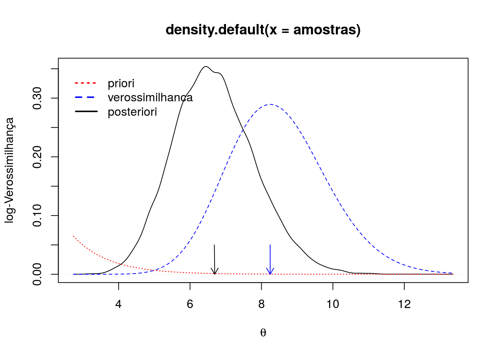

5. Considere os dados (iid) \(x = (x_i, \dots, x_n)\) das taxas de sucesso no primeiro saque de um jogador de tênis em n jogos de um campeonato. Assuma o modelo \(X\mid\theta \sim f(x_i\mid\theta) = \theta(\theta+1)x_i^{\theta - 1}(1 - x_i)\) com \(x_i \in (0, 1)\) e \(\theta>0\). Não existe uma família conjugada usual para este modelo e considera-se uma priori gamma \(\theta \sim Gamma(a, b)\).
6. Considere agora que n = 20, \(\sum_i \log(x_i) = 4,59\) e suponha que a priori é definida \(a = b = 1\). Mostre como esses dados seriam utilizados na obtenção das expressões relevantes das abordagens mencionadas.
\[ \begin{align*} f(x_i\mid\theta) &= \theta(\theta+1)x_i^{\theta - 1}(1 - x_i) \\ L(\theta \mid \underline{x}) &= \theta^n (\theta+1)^n \prod_i^n \left [ x_i^{\theta - 1}(1 - x_i)\right ]\\ l(\theta \mid \underline{x}) &= n (\log(\theta) + \log(\theta + 1)) + (\theta - 1) \sum_i^n \log{x_i} \end{align*} \]
##-------------------------------------------
## Função de verossimilhança
veross <- function(par, slx = -4.59, n = 20, log = TRUE,
paramet = c("theta", "phi")) {
parametrization <- match.arg(paramet)
switch(parametrization,
"theta" = {theta <- par},
"phi" = {theta <- exp(par)}
)
out <- n * (log(theta) + log(theta + 1)) + (theta - 1) * slx
if (!log) out <- exp(out)
attr(out, "parametrization") <- parametrization
return(out)
}##-------------------------------------------
## Obtendo o máximo da verossimilhança numericamente [theta]
## Parametrização original
tmaxi <- optimize(veross, interval = c(0, 60), paramet = "theta",
slx = -4.59, n = 20, maximum = TRUE)$maximum
thess <- optimHess(tmaxi, veross)
c("tmaxi" = tmaxi, "thess" = thess)## tmaxi thess
## 8.2431886 -0.5284253## Sob reparametrização [phi = log(theta)]
pmaxi <- optimize(veross, interval = c(0, 60), paramet = "phi",
slx = -4.59, n = 20, maximum = TRUE)$maximum
phess <- optimHess(pmaxi, veross)
c("pmaxi" = pmaxi, "phess" = phess)## pmaxi phess
## 2.109399 -6.563426##-------------------------------------------
## Curvas de verossimilhança
ep.theta <- sqrt(-thess^-1)
ep.phi <- sqrt(-phess^-1)
curve(veross(par = x, paramet = "theta"),
from = tmaxi - 3* ep.theta,
to = tmaxi + 3*ep.theta,
ylab = "log-Verossimilhança",
xlab = "")
abline(v = tmaxi, lty = 2, col = 1)
par(new = TRUE)
curve(veross(par = x, paramet = "phi"),
from = pmaxi - 3*ep.phi,
to = pmaxi + 3*ep.phi,
ylab = "",
xlab = "",
axes = FALSE,
col = 4)
axis(3, at = pretty(pmaxi + c(-1, 1) * 3 * ep.phi), col.axis = 4)
abline(v = pmaxi, lty = 3, col = 4)
legend("topright",
legend = expression(theta==theta, phi==log(theta)),
lty = 1, lwd = 2, col = c(1, 4), bty = "n")Incorporando a informação a priori temos:
Priori \[ \begin{align*} f(\theta) &= \frac{1}{\Gamma(a)b^a}\theta^{a-1} e^{-\frac{1}{b}\theta} \\ f(\theta) &\propto \theta^{a-1} e^{-\frac{1}{b}\theta} \end{align*} \]
##-------------------------------------------
## Informação a priori
curve(dgamma(x, 1, 1), from = 0, to = 12,
xlab = expression(theta))
abline(v = tmaxi, lty = 2, col = 4)Posteriori
\[ \begin{align*} & f(\theta \mid \underline{x}) \propto \theta^{a-1} e^{-\frac{1}{b}\theta} \theta^n (\theta + 1)^n \prod_i^n \left (x_i^{\theta - 1} \right ) \\ & f(\theta \mid \underline{x}) \propto (\theta+1)^n \theta^{n+a-1} e^{\frac{-\theta}{b} + (\theta-1) \sum_i^n \log(x_i)} \end{align*} \]
log-Posteriori
\[ \begin{align*} \log(f(\theta \mid \underline{x})) \propto n\log(\theta+1) + (n+a+1)\log(\theta) - \theta \left ( \frac{1}{b} - \sum\log(x) \right ) \end{align*} \]
##-------------------------------------------
## Função posteriori
posterior <- function(par, slx = -4.59, n = 20, a = 1, b = 1,
log = TRUE, paramet = c("theta", "phi")) {
parametrization <- match.arg(paramet)
switch(parametrization,
"theta" = {theta <- par},
"phi" = {theta <- exp(par)}
)
out <- n * log(theta + 1) + (n + a - 1) * log(theta) -
theta * (1/b - slx)
if (!log) out <- exp(out)
return(out)
}##-------------------------------------------
## Curvas da posteriori
##-------------------------------------------
## Obtendo o máximo da verossimilhança numericamente [theta]
## Parametrização original
tmaxip <- optimize(posterior, interval = c(0, 60), paramet = "theta",
slx = -4.59, n = 20, maximum = TRUE)$maximum
thessp <- optimHess(tmaxip, posterior)
c("tmaxi" = tmaxip, "thess" = thessp)## tmaxi thess
## 6.6904159 -0.7849772## Sob reparametrização [phi = log(theta)]
pmaxip <- optimize(posterior, interval = c(0, 60), paramet = "phi",
slx = -4.59, n = 20, maximum = TRUE)$maximum
phessp <- optimHess(pmaxip, posterior)
c("pmaxi" = pmaxip, "phess" = phessp)## pmaxi phess
## 1.900657 -7.913388##-------------------------------------------
## Curvas de posteriori
ep.thetap <- sqrt(-thess^-1)
ep.phip <- sqrt(-phess^-1)
curve(posterior(par = x, paramet = "theta"),
from = tmaxip - 3*ep.thetap,
to = tmaxip + 3*ep.thetap,
ylab = "log-posteriori",
xlab = "")
abline(v = tmaxip, lty = 2, col = 1)
par(new = TRUE)
curve(posterior(par = x, paramet = "phi"),
from = pmaxip - 3*ep.phip,
to = pmaxip + 3*ep.phip,
ylab = "",
xlab = "",
axes = FALSE,
col = 4)
axis(3, at = pretty(pmaxip + c(-1, 1) * 3 * ep.phip), col.axis = 4)
abline(v = pmaxip, lty = 3, col = 4)
legend("topright",
legend = expression(theta==theta, phi==log(theta)),
lty = 1, lwd = 2, col = c(1, 4), bty = "n")## Constante normalizadora da verossimilhanca (int L * 1/cte dtheta = 1)
cte <- integrate(veross, lower = 0, upper = tmaxi+5*ep.theta,
log = FALSE)$value##----------------------------------------------------------------------
## Por aproximação Normal
mu <- tmaxip
sigma <- sqrt((-thessp)^-1)
## Posteriori aproximada
curve(dnorm(x, mean = mu, sd = sigma),
from = tmaxip - 4.5*ep.thetap,
to = tmaxip + 4.5*ep.thetap,
ylab = "log-Verossimilhança",
xlab = expression(theta))
arrows(tmaxip, 0.05, tmaxip, 0, col = 1, length = 0.1)
## Verossimilhança normalizada
curve(veross(par = x, paramet = "theta", log = FALSE)/cte,
add = TRUE, lty = 2, col = 4)
arrows(tmaxi, 0.05, tmaxi, 0, col = 4, length = 0.1)
## Priori
curve(dgamma(x, 1, 1), add = TRUE, lty = 3, col = 2)
legend(x = 1.5, y = 0.35,
legend = c("priori", "verossimilhanca", "posteriori"),
lty = c(3, 2, 1), lwd = 2, col = c(2, 4, 1), bty = "n")## Resumos da posteriori
rbind("Média" = tmaxip,
"Mediana" = tmaxip,
"Moda" = tmaxip,
"IC95%" = paste(
round(qnorm(c(0.025, 0.975), mean = mu, sd = sigma), 3),
collapse = "; "
))## [,1]
## Média "6.69041592770301"
## Mediana "6.69041592770301"
## Moda "6.69041592770301"
## IC95% "4.478; 8.903"##----------------------------------------------------------------------
## Por discretização
seqTheta <- seq(2, 12, length.out = 101)
pesoTheta <- posterior(seqTheta, log = FALSE)
probTheta <- pesoTheta / sum(pesoTheta)
## Distribuição discreta
plot(10*probTheta ~ seqTheta, type = "h",
ylab = "Densidade")
## Verossimilhança normalizada
curve(veross(par = x, paramet = "theta", log = FALSE)/cte,
add = TRUE, lty = 2, col = 4)
arrows(tmaxi, 0.05, tmaxi, -0.01, col = 4, length = 0.1)
## Priori
curve(dgamma(x, 1, 1), add = TRUE, lty = 3, col = 2)
arrows(sum(seqTheta*probTheta), 0.05, sum(seqTheta*probTheta),
-0.01, col = 1, length = 0.1)
legend(x = 2, y = 0.35,
legend = c("priori", "verossimilhanca", "posteriori"),
lty = c(3, 2, 1), lwd = 2, col = c(2, 4, 1), bty = "n")## Aproximação da função inversa da acumulada
qdist <- approxfun(x = cumsum(probTheta), y = seqTheta)
## Resumos da posteriori
rbind("Média" = sum(seqTheta*probTheta),
"Mediana" = qdist(0.5),
"Moda" = seqTheta[which.max(probTheta)],
"IC95" = paste(
round(qdist(c(0.025, 0.975)), 3),
collapse = "; ")
)## [,1]
## Média "6.86977998572394"
## Mediana "6.76030482454143"
## Moda "6.7"
## IC95 "4.754; 9.224"Pacote MCMCpack será utilizado
library(MCMCpack)## Loading required package: coda## Loading required package: MASS## ##
## ## Markov Chain Monte Carlo Package (MCMCpack)## ## Copyright (C) 2003-2016 Andrew D. Martin, Kevin M. Quinn, and Jong Hee Park## ##
## ## Support provided by the U.S. National Science Foundation## ## (Grants SES-0350646 and SES-0350613)
## ####
## Attaching package: 'MCMCpack'## The following object is masked _by_ '.GlobalEnv':
##
## dinvgammaargs(MCMCmetrop1R)## function (fun, theta.init, burnin = 500, mcmc = 20000, thin = 1,
## tune = 1, verbose = 0, seed = NA, logfun = TRUE, force.samp = FALSE,
## V = NULL, optim.method = "BFGS", optim.lower = -Inf, optim.upper = Inf,
## optim.control = list(fnscale = -1, trace = 0, REPORT = 10,
## maxit = 500), ...)
## NULLE uma implementação, mais simples, do amostrador Metropolis é feita na função myMCMC
##-------------------------------------------
## Amostrador
myMCMC <- function(fun, theta.init, burnin = 5000,
mcmc = 20000, thin = 1, tune = 1) {
sim <- numeric(mcmc)
sim[1] <- theta.init
aceitos <- 0
for (i in 2:mcmc) {
oldtheta <- sim[i - 1]
newtheta <- runif(1, min = oldtheta - tune,
max = oldtheta + tune)
## alpha <- min(1, fun(newtheta)/fun(oldtheta))
alpha <- min(1, exp(fun(newtheta) - fun(oldtheta)))
if (runif(1) <= alpha) {
sim[i] <- newtheta
aceitos <- aceitos + 1
} else {
sim[i] <- oldtheta
}
}
##-------------------------------------------
## THINING
thining <- seq(1, length(sim), by = thin)
sim <- sim[thining]
##-------------------------------------------
## BURNIN
if (burnin != 0) {
sim <- sim[-(1:burnin)]
}
##-------------------------------------------
## FIRULA
ta <- aceitos/(mcmc - 1)
cat("==================================================",
sep = "\n")
cat(paste("A taxa de aceitação foi de", round(ta, 3)),
sep = "\n")
cat("==================================================",
sep = "\n")
##-------------------------------------------
attr(sim, "taxa.aceito") <- aceitos/(mcmc - 1)
return(sim)
}Detalhe importante, embora tenha-se deixado as funções com o mesmo argumento tune, este não representam a mesma alteração no amostrador. Na função do MCMCPack se é proposto um novo valor de uma distribuição Normal (multivariada se pars é um vetor) e na myMCMC é prosposto simplesmente de uma distribuição uniforme.
Via myMCMC
##-------------------------------------------
## Amostrando via myMCMC
K <- 2
amos <- vector("list", K)
for (i in 1:K) {
valores <- myMCMC(
fun = function(par)
posterior(par, paramet = "phi"),
mcmc = 30000,
burnin = 1000,
theta.init = log(5 + i),
tune = 0.7,
thin = 3)
amos[[i]] <- exp(valores)
}## ==================================================
## A taxa de aceitação foi de 0.381
## ==================================================
## ==================================================
## A taxa de aceitação foi de 0.377
## ==================================================## Empilhando os resultados
amostra.myMCMC <- as.data.frame(do.call("cbind", amos))
amostra.myMCMC <- cbind(stack(amostra.myMCMC), i = rep(1:9000, 2))
## Exibindo os resultados
xyplot(values ~ i, groups = ind,
data = amostra.myMCMC, type = c("g", "l"),
auto.key = list(column = 2, lines = TRUE, points = FALSE))densityplot(~values, groups = ind,
axis = axis.grid,
data = amostra.myMCMC, type = "l",
auto.key = list(column = 2, lines = TRUE, points = FALSE))## Juntando ambos
plot(acf(amostra.myMCMC$values))##-------------------------------------------
## Amostrando via MCMCpack
K <- 2
amos2 <- vector("list", K)
for (i in 1:K) {
valores <- MCMCmetrop1R(
fun = function(par)
posterior(par, paramet = "phi"),
mcmc = 30000,
burnin = 1000,
theta.init = log(5 + i),
tune = 3,
thin = 3)
amos2[[i]] <- exp(valores)
}##
##
## @@@@@@@@@@@@@@@@@@@@@@@@@@@@@@@@@@@@@@@@@@@@@@@@@@@@@@@@@
## The Metropolis acceptance rate was 0.37532
## @@@@@@@@@@@@@@@@@@@@@@@@@@@@@@@@@@@@@@@@@@@@@@@@@@@@@@@@@
##
##
## @@@@@@@@@@@@@@@@@@@@@@@@@@@@@@@@@@@@@@@@@@@@@@@@@@@@@@@@@
## The Metropolis acceptance rate was 0.37494
## @@@@@@@@@@@@@@@@@@@@@@@@@@@@@@@@@@@@@@@@@@@@@@@@@@@@@@@@@## Empilhando os resultados
amostra.MCMCpack <- as.data.frame(do.call("cbind", amos2))
amostra.MCMCpack <- cbind(stack(amostra.MCMCpack), i = rep(1:10000, 2))
## Exibindo os resultados
xyplot(values ~ i, groups = ind,
data = amostra.MCMCpack, type = c("g", "l"),
auto.key = list(column = 2, lines = TRUE, points = FALSE))densityplot(~values, groups = ind,
axis = axis.grid,
data = amostra.MCMCpack, type = "l",
auto.key = list(column = 2, lines = TRUE, points = FALSE))## Juntando ambos
plot(acf(amostra.MCMCpack$values))Como observado todas os valores paracem terem sido amostrados da mesma distribuição assim podemos empilhá-los para aproximar a posteriori
## Juntando todas as amostras geradas
amostras <- c(amostra.myMCMC$values, amostra.MCMCpack$values)
## Posteriori aproximada
plot(density(amostras),
ylab = "log-Verossimilhança",
xlab = expression(theta))
arrows(mean(amostras), 0.05, tmaxip, 0, col = 1, length = 0.1)
## Verossimilhança normalizada
curve(veross(par = x, paramet = "theta", log = FALSE)/cte,
add = TRUE, lty = 2, col = 4)
arrows(tmaxi, 0.05, tmaxi, 0, col = 4, length = 0.1)
## Priori
curve(dgamma(x, 1, 1), add = TRUE, lty = 3, col = 2)
legend(x = 2.5, y = 0.35,
legend = c("priori", "verossimilhanca", "posteriori"),
lty = c(3, 2, 1), lwd = 2, col = c(2, 4, 1), bty = "n")
##----------------------------------------------------------------------
## Resumos da posteriori
## Para obter a moda
d <- density(amostras)
## Resumos da posteriori
rbind("Média" = mean(amostras),
"Mediana" = median(amostras),
"Moda" = d$x[which.max(d$y)],
"IC95% quantil" = paste(
round(quantile(amostras, probs = c(0.025, 0.975)), 3),
collapse = "; "),
"IC95% hpd" = paste(
round(coda::HPDinterval(as.mcmc(amostras)), 3),
collapse = "; ")
)## [,1]
## Média "6.6816437651274"
## Mediana "6.61751673550972"
## Moda "6.43804601042243"
## IC95% quantil "4.627; 9.076"
## IC95% hpd "4.495; 8.932"